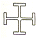
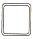
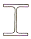
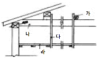
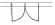

전산응용건축제도기능사 (2005-01-30 기출문제)
1과목: 건축구조
1. 미닫이 창호와 거의 같은 구조이며, 우리나라 전통건축 에서 많이 볼 수 있는 창호로 칸막이 기능을 가지고 있는 것은?
- 접이 창호
- 미서기 창호
- 붙박이 창호
- 자재 창호
(정답률: 77%)

2. 철골구조에서 간 사이가 크고 옆면의 기둥간격이 좁은 공장이나 체육관 같은 건축물에 유리한 기둥 단면 형태는?



(정답률: 67%)
3. 다음 그림은 일반 반자뼈대를 나타낸 것이다. 명칭이 옳지 않은 것은?

- 가 - 달대받이
- 나 - 지붕보
- 다 - 달대
- 라 - 처마도리
(정답률: 76%)
4. 목조계단에서 양끝에 세우는 굵은 난간동자의 명칭은?
- 계단멍에
- 두겁대
- 엄지기둥
- 디딤판
(정답률: 66%)
5. 벽돌조에서 내력벽으로 둘러싸인 부분의 바닥면적은 얼마를 초과 할 수 없는가?
- 60m3
- 80m3
- 100m3
- 120m3
(정답률: 69%)
6. 부재축에 직각으로 설치되는 스터럽의 간격은 철근콘크리트 부재의 경우 최대 얼마 이하로 하여야 하는가?
- 300㎜
- 450㎜
- 600㎜
- 700㎜
(정답률: 60%)
7. 절충식 지붕틀에서 지붕보의 간격은?
- 9.0m
- 1.8m
- 3.6m
- 4.8m
(정답률: 55%)
8. 벽돌조에서 개구부 상호간 또는 개구부와 대린벽 중심과의 수평거리는 벽 두께의 최소 몇 배 이상으로 하는가?
- 1배
- 2배
- 3배
- 4배
(정답률: 71%)
9. 모임지붕 일부에 박공지붕을 같이 한 것으로, 화려하고 격식이 높으며 대규모 건물에 적합한 한식 지붕구조는?
- 외쪽지붕
- 합각지붕
- 솟을지붕
- 꺽인지붕
(정답률: 77%)
10. 2층 마루 중에서 큰보 위에 작은 보를 걸고 그 위에 장선 을 대고 마루널을 깐 것은?
- 보마루
- 짠마루
- 홑마루
- 납작마루
(정답률: 51%)
11. 흙막이 부재중 토압과 수압을 지탱하기 위해 널말뚝 벽면 에 수평으로 대는 것은?
- 어미 말뚝
- 멍에
- 장선
- 띠장
(정답률: 33%)
12. 다음의 거푸집에 대한 설명 중 옳지 않은 것은?
- 기초거푸집은 지반이 무르고 좋지 않을 때는 사용하지 않는다.
- 벽거푸집은 일반적으로 한쪽 벽 옆판은 버팀대로 지지하여 세우고 철근을 배근한 후에 다른쪽 옆판을 세워서 조립한다.
- 기둥거푸집 재료로는 목재 합판이나 강재 패널 등을 사용한다.
- 보거푸집은 바닥거푸집과 함께 설치하는 경우가 많다.
(정답률: 39%)
13. 철골조에서 판보의 춤은 간사이의 얼마 정도가 적당한가?
- 1/10 ~ 1/12 정도
- 1/15 ~ 1/18 정도
- 1/18 ~ 1/20 정도
- 1/20 ~ 1/25 정도
(정답률: 46%)
14. 한 켜는 길이쌓기로 하고 다음 켜는 마구리쌓기로 하며, 모서리 또는 끝에서 칠오토막을 사용하는 벽돌 쌓기 법은?
- 영식쌓기
- 화란식쌓기
- 불식쌓기
- 미식쌓기
(정답률: 73%)
15. 철근콘크리트 구조의 장점에 대한 설명으로 옳지 않은 것은?
- 콘크리트의 성질이 산성으로 철근의 부식을 막아 주므로 내구성이 크다.
- 콘크리트는 압축력에 강하고, 철근은 인장력에 강하다.
- 설계가 비교적 자유롭고, 철골조보다 유지, 관리비용이 저렴하다.
- 철골조에 비해 처짐 및 진동이 적고, 소음이 비교적 적은 편이다.
(정답률: 51%)
16. 조적조에 대한 설명 중 옳지 않은 것은?
- 내력벽의 길이는 10m 이하로 한다.
- 벽돌벽을 이중으로 하고 중간을 띄어 쌓는 법을 공간쌓기 라 한다.
- 문꼴의 나비가 2m 정도일 때에는 목재 또는 석재 인방보를 설치한다.
- 영롱쌓기는 벽돌벽 등에 장식적으로 구멍을 내어 쌓는 것 이다.
(정답률: 40%)
17. 철골구조의 플레이트 보에서 스티프너(stiffener)는 웨브의 무엇을 방지하기 위하여 사용하는가?
- 처짐
- 좌굴
- 진동
- 블리딩
(정답률: 82%)
18. 철근콘크리트 단순보의 철근에 관한 설명 중 옳지 않은 것은?
- 인장력에 대항하는 재축방향의 철근을 보의 주근이라 한다.
- 중요한 보로서 압축측에도 철근을 배근한 것을 홑근보라 한다.
- 전단력을 보강하여 보의 주근 주위에 둘러감은 철근을 늑근이라 한다.
- 늑근은 단부에서는 촘촘하게 중앙부에서는 성기게 배치하는 것이 원칙이다.
(정답률: 46%)
19. 토대에 대한 설명으로 옳지 않은 것은?
- 기둥에서 내려오는 상부의 하중을 기초에 전달하는 역할을 한다.
- 토대에는 바깥토대, 칸막이토대, 귀잡이토대가 있다.
- 연속기초 위에 수평으로 놓고 앵커볼트로 고정시킨다.
- 이음으로 사개연귀이음과, 주먹장이음이 사용된다.
(정답률: 52%)
20. 거푸집공사시 패널사이의 간격을 유지하는데 쓰이는 긴결재는?
- 꺽쇠
- 띠쇠
- 세퍼레이터
- 듀벨
(정답률: 35%)
2과목: 건축재료
21. 각종의 색유리의 작은 조각들 도안에 맞추어 절단해서 조 합하여 모양을 낸 것으로 성당의 창, 상업건축의 장식용으로 사용되는 것은?
- 접합유리
- 스테인드글라스
- 복층유리
- 유리블록
(정답률: 73%)
22. 구리와 주석을 주체로 한 합금으로 건축장식철물 또는 미술공예 재료에 사용되는 것은?
- 황동
- 듀랄루민
- 주철
- 청동
(정답률: 66%)
23. 점토제품에서 SK의 번호는 무엇을 나타내는 것인가?
- 제품의 크기를 표시한다.
- 점토의 구성 성분을 표시한다.
- 제품의 용도를 나타낸다.
- 소성온도를 나타낸다.
(정답률: 53%)
24. 목재의 강도에 관한 설명 중 옳지 않은 것은?
- 섬유포화점 이하에서는 함수율이 감소할수록 강도는 증대 한다.
- 응력방향이 섬유방향에 평행할 경우 인장강도가 압축강도 보다 크다.
- 비중이 증가할수록 외력에 대한 저항이 감소하므로 목재의 강도는 감소한다.
- 압축강도는 옹이가 있으면 감소한다.
(정답률: 56%)
25. 미장재료에 대한 설명 중 옳은 것은?
- 회반죽에 석고를 약간 혼합하면 경화속도, 강도가 감소하며 수축균열이 증대된다.
- 미장재료는 단일재료로서 사용되는 경우보다 주로 복합재료로서 사용된다.
- 결합재에는 여물, 풀등이 있으며 자신은 직접 고체화에 관계하지 않는다.
- 시멘트 모르타르는 기경성 미장재료로써 내구성 및 강도가 크다.
(정답률: 48%)
26. 건축물의 내외면 마감, 각종 인조석 제조에 주로 사용되는 시멘트는?
- 실리카시멘트
- 조강포틀랜드시멘트
- 팽창시멘트
- 백색포틀랜드시멘트
(정답률: 70%)
27. 화강암에 대한 설명 중 틀린 것은?
- 심성암에 속하고 주성분은 석영, 장석, 운모, 각섬석 등으로 형성되어 있다.
- 질이 단단하고 내구성 및 강도가 크다.
- 고열을 받는 곳에 적당하며 석영이 많은 것이 가공이 쉽다.
- 용도로는 외장, 내장, 구조재, 도로포장재, 콘크리트 골재 등에 사용된다.
(정답률: 54%)
28. 다음 중 목재의 방부제로서 가장 부적절한 것은?
- 황산동 1%의 수용액
- 염화아연 3% 수용액
- 수성페인트
- 크레오소트 오일
(정답률: 51%)
29. 콘크리트 배합에 사용되는 물에 대한 설명으로 옳지 않은 것은?
- 산성이 강한 물을 사용하면 콘크리트의 강도가 증가 한다.
- 기름, 알칼리, 그 밖에 유기물이 포함된 물은 사용하지 않는 것이 좋다.
- 당분은 시멘트 무게의 0.1~0.2%가 함유되어도 응결이 늦고, 그 이상이면 강도도 떨어진다.
- 염분은 철근 부식의 원인이 되므로 철근 콘크리트에는 사 용하지 않는 것이 좋다.
(정답률: 73%)
30. 보통포틀랜드시멘트의 응결시간에 대한 KS규정으로 맞는 것은?
- 초결 10분 이상, 종결 1시간 이하
- 초결 20분 이상, 종결 4시간 이하
- 초결 30분 이상, 종결 6시간 이하
- 초결 60분 이상, 종결 10시간 이하
(정답률: 61%)
31. 금속의 방식법에 대한 설명으로 옳지 않은 것은?
- 다른 종류의 금속을 서로 잇대어 쓰지 않는다.
- 큰 변형을 준 것은 가능한 한 풀림하여 사용한다.
- 표면을 평활, 청결하게 하고 가능한 습윤상태로 유지한다.
- 방부 보호피막을 실시한다.
(정답률: 63%)
32. 목재의 기건재 함수율은 얼마 정도인가?
- 10%
- 15%
- 20%
- 25%
(정답률: 76%)
33. 다음 중 점토벽돌의 품질시험에서 가장 중요한 것은?
- 압축강도의 시험과 휨강도 시험
- 흡수율과 휨강도 시험
- 흡수율과 압축강도 시험
- 압축강도 시험과 전단강도 시험
(정답률: 64%)
34. 각종 석재에 대한 설명 중 옳은 것은?
- 화강암은 내구성 및 내화성 크고 절리의 거리가 비교적 커 서 대재를 얻을 수 있다.
- 안산암은 내화력은 우수하지만 강도, 경도, 비중이 적어 구 조용 석재로 사용할 수 없다.
- 현무암은 내화성은 적으나 자공이 쉬우며 암면의 원료로 사용된다.
- 석회암은 석질은 치밀하고 강도는 크나 내화성이 적고 화학적으로 산에는 약하다.
(정답률: 33%)
35. 콘크리트 내부에는 미세한 독립된 기포를 발생시켜 콘크리트의 작업성 및 동결융해 저항성능을 행상시키기 위해 사용되는 화학 혼화제는?
- 응결, 경화조정제
- 방청제
- 기포제
- AE제
(정답률: 64%)
36. 타일의 흡수율에 대한 규정으로 옳은 것은?(한국산업규격)
- 자기질 8%, 석기질 15%, 도기질 18%, 클링커타일 28% 이하로 규정되어 있다.
- 자기질 13%, 석기질 15%, 도기질 18%, 클링커타일 18% 이하로 규정되어 있다.
- 자기질 3%, 석기질 5%, 도기질 18%, 클링커타일 8% 이하로 규정되어 있다.
- 자기질 15%, 석기질 15%, 도기질 18%, 클링커타일 28% 이하로 규정되어 있다.
(정답률: 52%)
37. 시멘트의 관한 설명 중 옳지 않은 것은?
- 시멘트의 비중은 소성온도나 성분에 따라 다르며, 동일 시 멘트의 경우에 풍화한 것일수록 작아진다.
- 우리나라의 경우 시멘트 1포는 보통 60kg이다.
- 시멘트의 분말도는 브레인법 또는 표준체법에 의해 측정된다.
- 안정성이란 시멘트가 경화될 때 용적이 팽창하는 정도를 말한다.
(정답률: 53%)
38. 다공질벽돌에 관한 설명 중 옳지 않은 것은?
- 방음, 흡음성이 좋지 않고 강도도 약하다.
- 점토에 분탄, 톱밥 등을 혼합하여 소성한다.
- 비중은 1.5 정도로 가볍다.
- 톱질과 못 박음이 가능하다.
(정답률: 75%)
39. 건축 재료에서 물체에 외력이 작용하면 순간적으로 변형이 생겼다가 외력을 제거하면 원래의 상태로 되돌아가는 성질은?
- 탄성
- 소성
- 정성
- 감성
(정답률: 88%)
40. 다음 중 구조 재료에 요구되는 성질과 가장 관계가 먼 것은?
- 재질이 균일하여야 한다.
- 강도가 큰 것이어야 한다.
- 탄력성이 있고 자중이 커야 한다.
- 가공이 용이한 것이어야 한다.
(정답률: 70%)
3과목: 건축계획 및 제도
41. 투시법에 사용되는 용어의 연결이 옳지 않은 것은?
- 소점 : V.P
- 정점 : S.P
- 화면 : E.P
- 수평면 : H.P
(정답률: 58%)
42. 컴퓨터에서 입력장치와 출력장치가 바르게 짝지어진 것은?
- 프린터, 플로터
- 키보드, 프린터
- 마우스, 스캐너
- 태블릿, 키보드
(정답률: 78%)
43. 1방향 철근콘크리트 슬래브의 배근도에서 철근을 가장 많이 배근해야 할 곳은?
- 장변방향 단부
- 장변방향 중앙부
- 단변방향 단부
- 단변방향 중앙부
(정답률: 45%)
44. 다음의 주기기억장치에 대한 설명 중 옳은 것은?
- 램(RAM)은 읽기만 가능한 기억장치로서 전원이 끊어져도 기억된 내용이 지워지지 않는 비휘발성메모리다.
- 롬(ROM)은 전원이 꺼지면 기억된 내용이 모두 지워지는 휘발성메모리이다.
- 캐시메모리(Cache Memory)는 컴퓨터 속에 장착해 속도를 빠르게 하는 임시메모리이다.
- 정적램(SRAM)은 동적램(DRAM)보다 집적도가 크기 때문에 대용량 메모리로 사용되나 속도가 느리다.
(정답률: 48%)
45. 건축물과 관련된 각종 배경의 표현 요령에 대한 설명으로 가장 올바른 것은?
- 표현은 항상 섬세하게 하도록 한다.
- 건물을 이해할 수 있도록 배경을 다소 크게 표현한다.
- 배경을 다양하게 표현한다.
- 건물보다 앞쪽의 배경은 사실적으로, 뒤쪽의 배경은 단순 하게 표현한다.
(정답률: 79%)
46. 치수보조선은 치수를 나타내는 부분의 양끝에서 어느 정도 떨어져서 긋기 시작하는가?
- 0.5~1㎜
- 2~3㎜
- 6~7㎜
- 9~10㎜
(정답률: 50%)
47. 조적 구조 벽체의 제도시 요구되는 사항이 아닌 것은?
- 구성 재료의 치수
- 토대의 크기
- 구성 재료의 종류
- 벽체의 두께
(정답률: 48%)
48. 주택 배치도의 제도 내용에서 반드시 표시하여야 하는 것은?
- 방위 및 경계선
- 실의 크기
- 외부 마감재
- 지붕 물매
(정답률: 63%)
49. 건축도면의 글자 및 숫자에 대한 설명으로 잘못된 것은?
- 글자의 크기는 각 도면의 상황에 맞추어 알아보기 쉬운 크기로 한다.
- 글자체는 고딕체로 하며, 30° 경사로 쓰는 것을 원칙으로 한다.
- 숫자는 아라비아 숫자를 원칙으로 한다.
- 문장은 왼쪽에서부터 가로쓰기를 원칙으로 한다.
(정답률: 77%)
50. 다음 모델링 중 가장 고급의 모델로서 3차원 모델링은?
- 와이어프레임모델링
- 경계면모델링
- 솔리드모델링
- 시스템모델링
(정답률: 55%)
51. 건축물의 묘사 및 표현에 관한 설명 중 옳지 않은 것은?
- 음영은 건축물의 입체적인 표현을 강조하기 위해 그려 넣는 것으로 실시설계도나 시공도에 주로 사용된다.
- 건축 도면에 사람의 그림을 그려 넣은 목적은 스케일감을 나타내기 위해서이다.
- 건축 도면에서 수목의 배치와 표현을 통해 건물 주변 대지 의 성격을 나타낼 수 있다.
- 여러 선에 의한 건축물의 표현 방법은 선의 간격을 달리함으로서 면과 입체를 결정한다.
(정답률: 59%)
52. 설계도면의 표제란에 기입하지 않아도 되는 것은?
- 축척
- 도면 작성 연월일
- 도면 명칭
- 시공회사 명칭
(정답률: 69%)
53. 창호의 평면표시 기호명칭이 잘못 연결된 것은?
- 외여닫이창
- 미서기창
- 외미닫이창
- 쌍여닫이창

(정답률: 80%)
54. 건축제도에서 선의 용도에 관한 설명으로 틀린 것은?
- 점선은 보이지 않는 부분의 모양을 표시하는데 사용한다.
- 1점 쇄선은 중심선, 절단선, 기준선, 경계선 등에 사용한다.
- 실선은 단면의 윤곽표시에 사용된다.
- 파선은 치수보조선, 인출선, 격자선에 사용된다.
(정답률: 63%)
55. 다음 중에서 시기적으로 가장 먼저 이뤄지는 도면은?
- 기본 설계도
- 실시 설계도
- 계획 설계도
- 시공 계획도
(정답률: 75%)
56. 다음의 철근 콘크리트 줄기초 제도 순서에 관한 내용 중 가장 나중에 이루어지는 것은?
- 지반선과 기초벽의 중심선을 그린다.
- 재료의 단면 표시를 한다.
- 표제란을 작성하고, 표시사항의 누락 여부를 확인한다.
- 지정과 기초판 각 부분의 두께와 너비를 그린다.
(정답률: 63%)
57. CAD의 특징으로 잘못된 것은?
- 도면의 정확함
- 수정이 복잡함
- 작업이 신속함
- 입·출력이 용이함
(정답률: 84%)
58. 각실 내부의 의장을 명시하기 위해 작성하는 도면은?
- 배근도
- 전개도
- 설비도
- 구조도
(정답률: 49%)
59. 삼각 스케일에 표기되어 있는 축척이 아닌 것은?
- 1/100
- 1/600
- 1/250
- 1/300
(정답률: 67%)
60. 묘사도구 중 연필에 대한 설명으로 옳지 않은 것은?
- 연필은 9H부터 6B까지 15종류에 F, HB를 포함하여 17단 계로 구분한다.
- 밝은 상태에서 어두운 상태까지 폭넓게 명암을 나타낼 수 있다.
- 선명하게 보이고, 도면이 더러워지지 않는다.
- 연필은 다양한 질감 표현이 가능하며, 지울 수 있는 장점 이 있다.
(정답률: 87%)